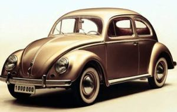
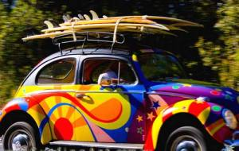
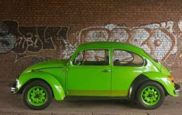

Volkswagen Buba
Volkswagen Buba
Volkswagen "Buba" (German Volkswagen Käfer, official name Typ 1) is a German car and the first model of the Volkswagen factory. It was produced from 1938 to 2003 and was one of the most popular and best-selling car in the world with a total of 21,529,464 produced copies. In the history of the auto industry, "Buba" is the only model that during the long years of production did not undergo almost any significant design change. Due to its great popularity, in 1998 Volkswagen made a remake called the "new Buba".
As rare as any other car, the "bug" has reached its cult status and a large number of fans around the world have joined in many fan clubs. She also appeared in popular culture - a film (she was the main character of Disney's film series Herbi), television, comics etc., was one of the trademarks of the hippies and was inexhaustible source of inspiration for numerous professional and amateur processing.